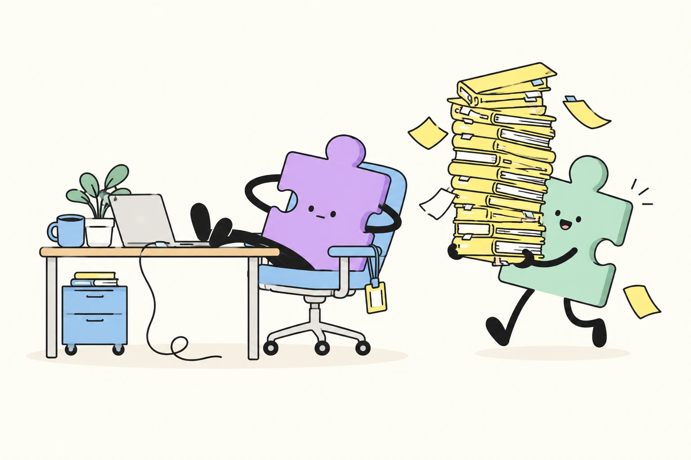

說好是 I 人，追星時比誰都會喊。說好是 J 人，人生計畫卻停在明天再說。

先別急著把自己塞進四個字母。今天的你，可能跟昨天完全不同。
不收集姓名、不用登入。放心暴露你的生存本能。
不是很難分析，是槽點有點多。
你可能要看對象、看心情，還要看明天有沒有早八。真實的人比選項複雜，四個字母裝不下你的全部。
《MBTI生存指南》把人格標籤帶回真實生活：街頭接力猜 E／I，再偷看 P／J 的一天。你以為的那種人，真的就是那種人嗎？下次看到我們，先猜猜，再聽本人怎麼說。
這是依本次選項產生的趣味分類，非正式 MBTI 結果。長條顯示選項比例，不代表人格特質強度。